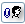

| Wanneer u een
bericht opent
krijgt u een nieuwe menubalk te zien. Deze menubalk geeft u meer megelijke handelingen die u kunt uitvoeren met het door u geopende bericht.
De berichten menubalk:

Hieronder staat een tabel met de beschikbare knoppen en hun functie.
| Knop/Ikoon |
Naam/Alternatieve tekst |
Functie van de knop |
|
| Terug naar vorige scherm | Laat u terug gaan naar de map waar u het e-mail bericht heeft geopend. |
 | Nieuw Bericht | Creates a new e-mail message* |
|
| Antwoord | Replies to the sender of the message. |
 | Antwoord iedereen | Replies to all senders of the e-mail, including forwarders |
|
 | Doorsturen als Bijlage | Stuur het geopende bericht door als bijlage aan nieuwe e-mail |
 | Print | Geeft printervriendelijke weergave van het bericht en opent het printer scherm |
|
| Kalender | Opent de Kalender |
 | Uitloggen | Verlaat Open Webamil |
Overige knoppen:
| Knop/Ikoon |
Naam/Alternatieve tekst |
Functie van de knop |
 | Importeer in adresboek | Voegt de e-mail gegevens van de verzender van het bericht toe aan uw adresboek |
 | Blokkeer verzender | Blokkeert de verzender van deze e-mail via een filter. |
 | Blokkeer SMTP verkeer | Blokkeert het
SMTP
relay verkeer van dit bericht (de server die u dit bericht stuurde) |
The "Back to Previous" performs the same action as the one on the chart above. The Left and Right arrows accompanying the "1" are for browsing between multiple messages in the mailbox (the left arrow navigates to the previous message, the right arrow navigates to the next message). The number in between the arrows tells you what message you are viewing (1 specifies the 1st message in the mailbox).
The drop menu in which the text Select Stationery for Reply is in, allows you to select what stationery you would like to use for a reply. Open the menu to display a list of stationery you have made. Once you have selected one, you will be able to reply to the message with the stationery you selected. If you do not have any stationery set up, click the stationery button (
) after which you will be able to edit and/or create new stationery. For a definition of stationery see
The Settings Toolbar
.
* If you are viewing a message in the drafts folder (see
Managing Your Folders
), this button will Edit the message, rather than start a new one. |